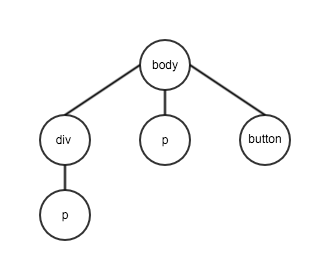

Web Basic
by sway
Contents
- An old face question
- HTML
- HTTP
- XHR
- AJAX
An old face question
从你在浏览器里敲入域名，到最后网页呈现到眼前，发生了什么？
1. 按下键盘，呈现到屏幕上为一串字符串
balabala
(不是这次的范围)
2. 浏览器根据你输入域名，生成 HTTP 请求 (Request)
会发送一个 GET 请求
3. HTTP 请求发生了什么？
xxxxxxx
(稍后再提)
4. 服务端收到 HTTP 请求，生成一个回应 (Response)
回应是 HTML 字符串
(服务端做了什么？balabala……不是这次的范围)
5. 浏览器收到 HTML 字符串，开始解析字符串
HTML
HyperText Markup Language (超文本标记语言)
HTML 的结构是一棵树(DOM 树)
CSS 解析

DOM 树和 CSS 解析生成的样式表相结合，构成最终的渲染树
渲染树用一定的渲染方法和流程，将元素按排列顺序用矩形区域绘制在用户面前
[Review] CSS 盒模型
当浏览器遇到 script 标签时
- 读入标签里的所有内容
- 除非标签里有 defer 或者 async 属性，否则浏览器会立刻解析并且执行这些 Javacript 命令
- 当有 defer 或者 async 属性时，则会在 HTML 全部解析完毕后再去解析这里的 Javascirpt
HTTP
Hypertext Transfer Protocol
用作客户端（浏览器）和服务端进行通信
客户端发送 Request 给服务端，服务端返回 Response 给客户端

Request 构成
- Request Header
- Request Body
Response 构成
- Response Header
- Response Body
XHR
XMLHttpRequest
- 浏览器的 API，可以理解一个 JS 对象
- 使用 HTTP 协议和服务端进行通信，并且可以在不刷新(Reload)页面的情况下获取数据
AJAX
什么是 AJAX?
AJAX 是一种工作流的标准，目的是在不刷新(Reload)页面的情况局部更新(Update)页面
原理
- 1. 创建 XMLHttpRequest，处理发送数据
- 2. 处理 Response
- 3. 使用 Javascript 更新(Update)页面